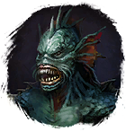

⚔
Broken Ranks
Fandom Wiki
Интерактивная вики
·
Все страницы
Морской кристалл
Предметы
/ С врагов
Открыть в интерактивной вики →
Вес
35
Цена
0
Описание
Источник
Кристаллы
, необходимых для расширения гильдии. Ими интересуется
Снабженец
Источник кристаллов для развития гильдии.
Рецепт
Обмен
Дроп

Акват
Применение
4 × Морской кристалл можно обменять на 5 ×
Кристаллы
у Снабженца в Поместье Ландау,
Для завершения
поручения
Поручение с предсказанием
.
Как добыть
Получаем за победу над:
Акват
Акват-Воин
Упоминается в
Сырьё и ингредиенты
,
Обломки корабля